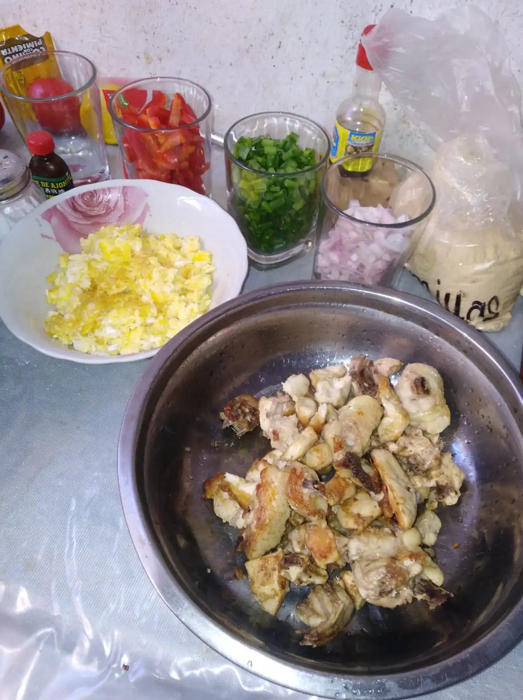

Arroz Chaufa
Peruvian-chinese dish, Easy to cook just add and mix everything.
- ⏲️ Prep time: 40 min
- üç≥Cook time: 10 min
- üçΩÔ∏è Servings: 4
Ingredients
- Rice
- Salt
- Bell Pepper
- Chicken
- Eggs
- Soy Sauce
- Welsh Onion

Directions
- Cut the chicken into pieces and fry it (don’t forget the salt).
- Cook scrambled eggs (don’t forget the salt).
- Cook the rice (if it is yesterday’s rice better, preferably without salt).
- Cut the welsh onion and bell pepper into small squares.
- Mix everything over low heat, adding soy sauce.
- Optional: Add bacon, sesame oil.
- (Everything is salty, you can reduce it with just a teaspoon of sugar, especially if you cook the rice with salt.)
Contribution
- Andy Rufasto

Recipe tags:
peruvian
chinese
rice